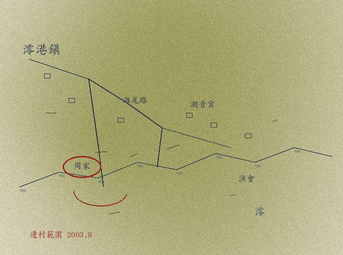

全鎮三十七戶．依門牌順序

遷村範圍．紅筆為後來圈上（2003/08/13）
| 戶號 | 戶長 | 人數 | 狀態 |
|---|---|---|---|
| 01 | 林宅 | 5 人 | 已遷出 |
| 02 | 陳宅 | 7 人 | 已遷出 |
| 03 | 吳宅 | 4 人 | 已遷出 |
| 04 | 王宅 | 6 人 | 已遷出 |
| 05 | 許宅 | 3 人 | 已遷出 |
| 06 | 周宅 | 5 人 | 已遷出 |
| 07 | 李宅 | 7 人 | 已遷出 |
| 08 | 蔡宅 | 4 人 | 已遷出 |
| 09 | 黃宅 | 6 人 | 已遷出 |
| 10 | 張宅 | 3 人 | 已遷出 |
| 11 | 簡宅 | 5 人 | 已遷出 |
| 12 | 鄭宅 | 7 人 | 已遷出 |
| 13 | 謝宅 | 4 人 | 已遷出 |
| 14 | 洪宅 | 6 人 | 已遷出 |
| 15 | 曾宅 | 3 人 | 已遷出 |
| 16 | 楊宅 | 5 人 | 已遷出 |
| 17 | 邱宅 | 7 人 | 已遷出 |
| 18 | 廖宅 | 4 人 | 已遷出 |
| 19 | 賴宅 | 6 人 | 已遷出 |
| 20 | 徐宅 | 3 人 | 已遷出 |
| 21 | 游宅 | 5 人 | 已遷出 |
| 22 | 江宅 | 7 人 | 已遷出 |
| 23 | 呂宅 | 4 人 | 已遷出 |
| 24 | 何宅 | 6 人 | 已遷出 |
| 25 | 羅宅 | 3 人 | 已遷出 |
| 26 | 高宅 | 5 人 | 已遷出 |
| 27 | 蕭宅 | 7 人 | 已遷出 |
| 28 | 潘宅 | 4 人 | 已遷出 |
| 29 | 周家 | 周夢回、周秀蘭 | 未完成遷出登記 |
| 30 | 沈宅 | 3 人 | 已遷出 |
| 31 | 彭宅 | 5 人 | 已遷出 |
| 32 | 宋宅 | 7 人 | 已遷出 |
| 33 | 唐宅 | 4 人 | 已遷出 |
| 34 | 鄧宅 | 6 人 | 已遷出 |
| 35 | 馮宅 | 3 人 | 已遷出 |
| 36 | 傅宅 | 5 人 | 已遷出 |
| 37 | 侯宅 | 7 人 | 已遷出 |
第 29 戶未完成遷出登記。查無後續資料。
（名冊最後一頁被撕掉，缺 38 號之後。）